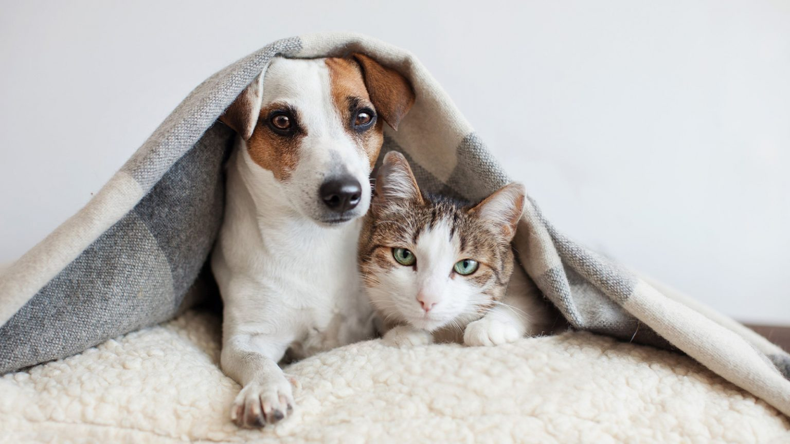

A importância do lar temporário para cães e gatos

O lar temporário é quando uma pessoa, um protetor ou uma organização acolhe provisoriamente um cão ou um gato, que não tem um tutor...
Esse é o Téo, adotado por uma família e demonstrando sua alegria!
Tonico, sem "Auu..lavras" para expressar a gratidão!
Amarelinho também foi adotado! Depois de alguns meses na tentativa, finalmente encontramos uma dona.
Quem disse que irmãos não podem ser diferentes? Manu e Cleo foram adotadas e vivem como uma família.
Finalmente foi adotada aos 14 anos! Senhorinha, como foi carinhosamente chamada pela dona, demonstra gratidão em cada olhar.
A tranquilidade de Cacau em sua nova casa. Adotada recentemente e curtindo a nova vida.